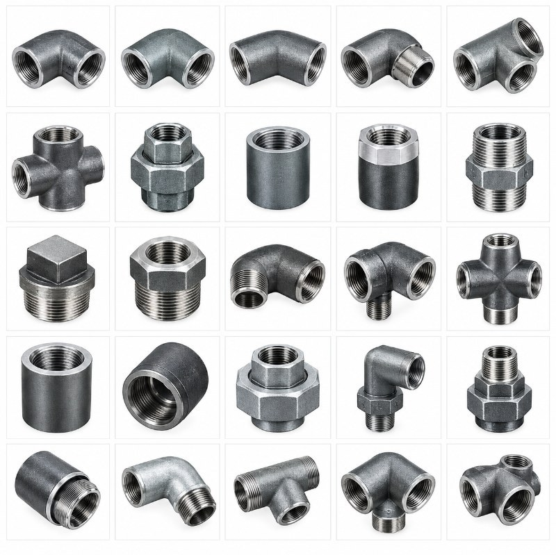
M.S Pipe Fitting, Low Pressure
Sizes¼" – 2"
- 1000#
- BSPT
Pipe, Fittings & Flanges · 12 products
Carbon steel forged, low-pressure and butt-weld fittings, pipe, tubing and nipples. Ask Fakhri Tools for a quote on WhatsApp, by phone or at our trade counter in Al Quoz Industrial Area 3.

Sizes¼" – 2"
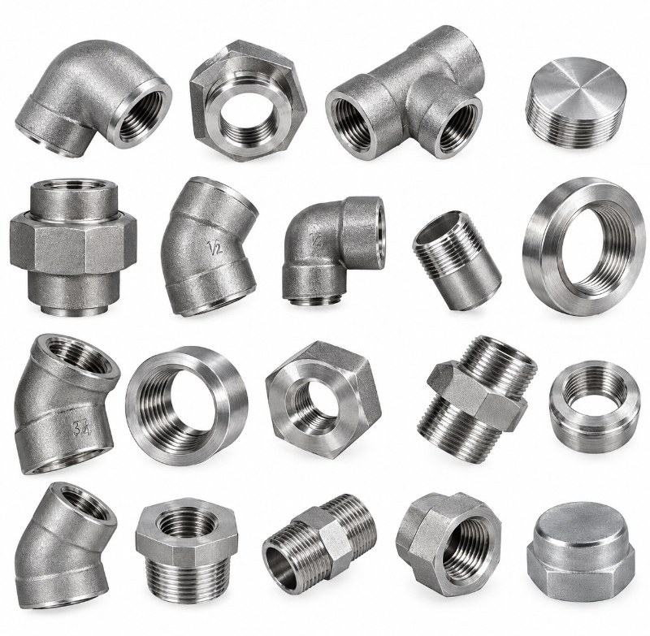
Sizes⅛" – 4"
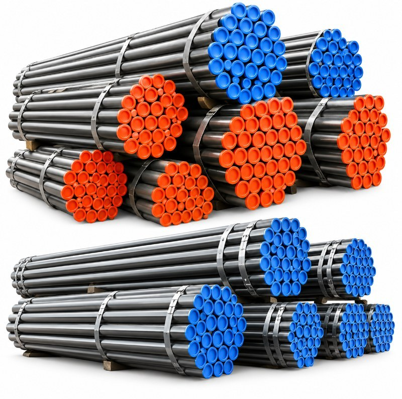
Sizes¼" – 24" · 6 m / DRL
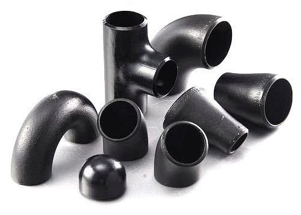
Sizes¼" – 24"
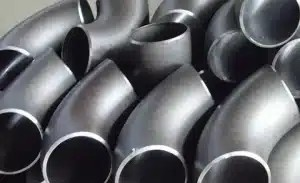
Sizes½" – 24"
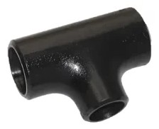
Sizes½" – 24"
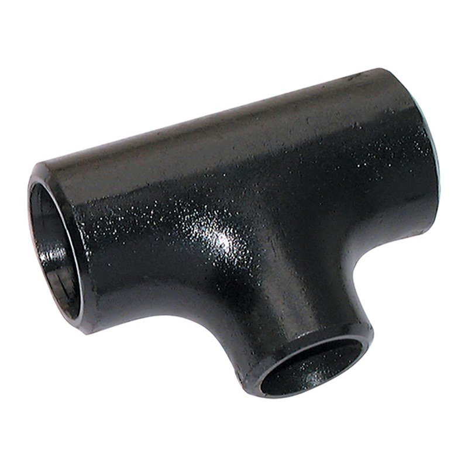
Sizes½" – 24"
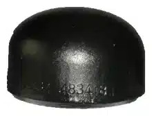
Sizes½" – 24"
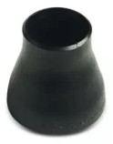
Sizes¾" × ½" – 24" × 22"
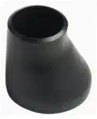
Sizes¾" × ½" – 24" × 22"
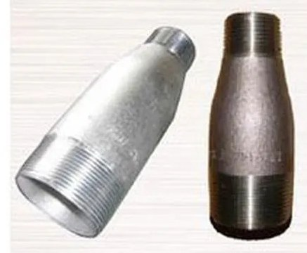
Sizes¾" × ½" – 8" × 6"
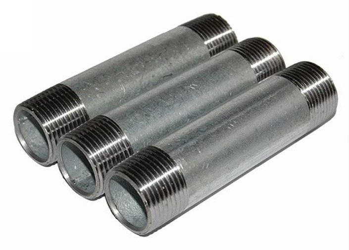
Sizes¼" – 6" × 8"
Send a photo of it, or its nameplate, on WhatsApp and we will tell you if we have it.